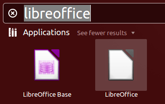
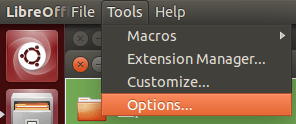
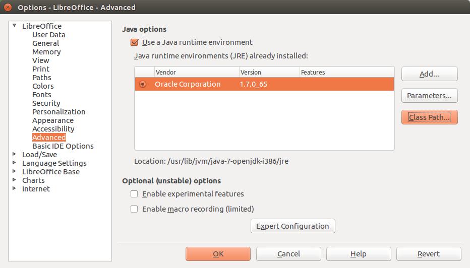
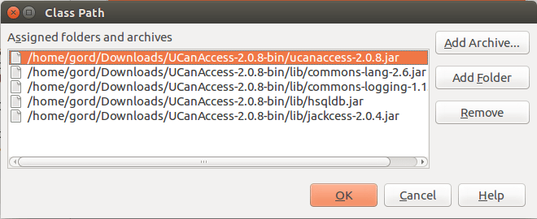
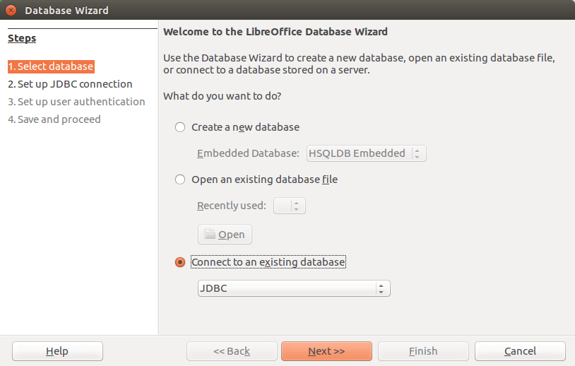
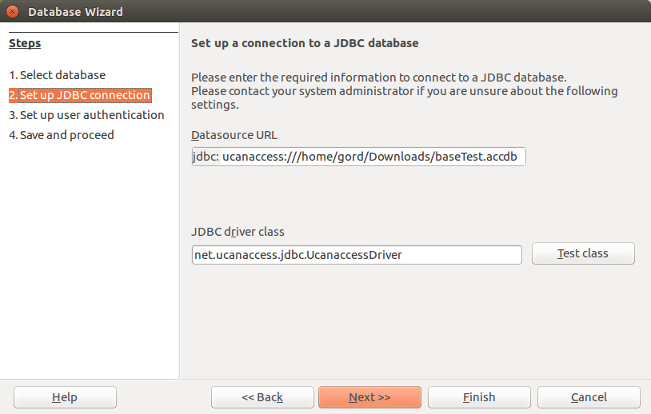
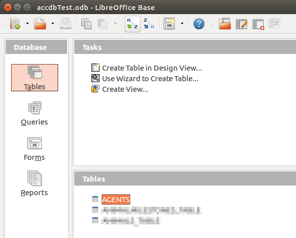

Recently, I need to run a .accdb file in Ubuntu. I use ubuntu 14.04 LTS version. I tried to run with LibreOffice Base. But failed. And thanks to AskUbuntu. I got the solution from there.
We can use the UCanAccess JDBC driver to connect to Access databases (.mdb and .accdb) in LibreOffice Base. Here’s how I did it on a clean install of Ubuntu 14.04 LTS.
First, I installed LibreOffice Base itself
sudo apt-get install libreoffice-baseThen I downloaded UCanAccess to my Downloads folder and unzipped it.
I launched LibreOffice (not Base, just LibreOffice itself)

and chose Tools > Options

On the Advanced tab I clicked the “Class Path…” button

and then added the following five (5) JAR files using the “Add Archive…” button:
/home/abrar/Downloads/UCanAccess-2.0.9.5-bin/ucanaccess-2.0.9.5.jar
/home/abrar/Downloads/UCanAccess-2.0.9.5-bin/lib/commons-lang-2.6.jar
/home/abrar/Downloads/UCanAccess-2.0.9.5-bin/lib/commons-logging-1.1.1.jar
/home/abrar/Downloads/UCanAccess-2.0.9.5-bin/lib/hsqldb.jar
/home/abrar/Downloads/UCanAccess-2.0.9.5-bin/lib/jackcess-2.1.0.jar
Note that you must close and re-open LibreOffice for the new Class Path values to take effect.
Then I launched LibreOffice Base, and in Step 1 of the wizard I chose “Connect to an existing database (JDBC)”

The Access file I wanted to manipulate was named “baseTest.accdb” in my Downloads folder, so in Step 2 the “Datasource URL” was
jdbc:ucanaccess:///home/abrar/Downloads/baseTest.accdband the “JDBC driver class” was
net.ucanaccess.jdbc.UcanaccessDriver
In Step 3, I left the “User name” field empty and just clicked “Next >>”.
In Step 4, I saved the LibreOffice Base database as “accdbTest.odb” in my Documents folder.
When the wizard completed it opened my LibreOffice database and I could see the tables in the .accdb file

This solution is collected from here. Thanks Gord Thompson, you helped me a lot.
this does not work so good if the file is on a remote system. is there any other way to do this?
Work just Fine! thanks!
Excellent, thank you very much for a very clear explanation.
Brilliant dude! Thanks!!!
Thanks ! :D
Thank you. It works well with tables!